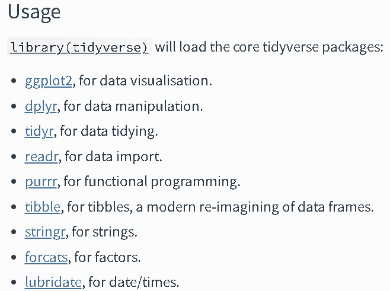

Chapter 6 應用篇_實作簡單資料處理
接下來會使用「R_practice_row.csv」的檔案，來繼續示範資料的初步清理與整理，
(R_practice_row.csv 是尚未清理的檔案，存在不合理值
R_practice_new.csv 是已經清理好的檔案)
以下為檔案簡略的變項描述
簡略的變項描述
6.1 前置準備
6.1.1 讀取需要使用套件
以下為資處常使用的套件:
大部分的資處會使用到一個整合性的套件tidyverse(上述連結點進去後，可以根據不同套件的連結查看套件的cheatsheet)，其功能非常強大，在此只會簡單介紹關於資處的部分內容，

在接續下面分析前請先library以下套件
library(readr) ## 讀取檔案
library(tidyverse) ## 大部分的資處工具 (包含dplyr套件)
library(data.table) ## 高效能資處工具
library(DescTools) ## 初步描述統計
library(sjmisc) ## 設置缺失值
library(sjlabelled) ## 上標籤用接下來關於資料清理的部分，並不會特別單一仔細的講解，而是會使用簡單的實際例子來呈現，並適時補充一點額外的解釋，當然由於R語言的功能強大有很多套件，也持續在整合並強化，下面介紹的資料清理可能不會是唯一的方式，也不一定是最有效率方式，但仍可以稍微參考。
6.1.3 讀取檔案
讀取R_practice_row的.cvs檔案(或用點選方式)
R_practice_row <- read_csv("data/R_practice_row.csv")
names(R_practice_row) ## 查看變項名稱## [1] "id" "sex" "age" "height" "weight" "area" "score"
## [8] "fitness"6.1.4 選取需要的變項到「新」的資料檔中
在此因為都要分析，但為了示範，因此全部都列上去，複製到新的資料檔是為了不更改最初的資料。
R_practice_row1 <- R_practice_row[c("id", "sex", "age", "height", "weight",
"area", "score", "fitness")]6.1.5 瀏覽資料
查看變項初步分配，來檢查是否有不合理值或缺失值
(以下指令都還有各自呈現的細節可以調整，可自行查看該指令的help)
使用table()函數初步查看次數分配(以sex性別為例)
(useNA 是設定列出是否有NA)
table(R_practice_row1$sex, useNA = "always") ## 呈現簡單次數分配##
## 1 2 22 <NA>
## 57 52 1 0使用frq()函數呈現更多內容的次數分配表與簡單描述統計
frq(R_practice_row1$sex) ## x <numeric>
## # total N=110 valid N=110 mean=1.66 sd=2.02
##
## Value | N | Raw % | Valid % | Cum. %
## -------------------------------------
## 1 | 57 | 51.82 | 51.82 | 51.82
## 2 | 52 | 47.27 | 47.27 | 99.09
## 22 | 1 | 0.91 | 0.91 | 100.00
## <NA> | 0 | 0.00 | <NA> | <NA>上述結果我們可以得知，選1(女生)的總共有57人，佔51.82%、選2(男生)的總共有52人，佔47.27%，顯示這份資料女生稍微點一點，但另外可以看到，還有一個「22」的值，回去看一開始的變項描述也沒有出現這個值，因此可以判斷「22」很有可能是不合理的值，不應該出現在性別的變項當中，下一步則是要來處理這個不合理值。
我們可以看到，瀏覽資料的其中一個重要的目的，就是查看資料是否有不合理的地方。
6.2 設定不合理值
資料可能會有一些不合理的值，或是像上述「性別變項中回答22」，在分析上會當作遺漏值處理
R語言的遺漏值是以NA表示，但可以進一部細分成數值型的遺漏值NA_integer_或是字串型的遺漏值NA_character_
以下僅列出部分方式，但同樣也有其他套件可以做到相同的設定遺漏值
目標是按照瀏覽檔案的覺得是不合理的值，將這些值的都當NA處理，並回傳到新的data frameR_practice_row2
R_practice_row2 <- R_practice_row1 %>% ## %>% : pipe 將WVS_w7_n1(資料)用於mutate()函數中
mutate( ## 使用dplyr套件中的 mutate()代表創建/修改變項
# 第一種設定遺漏值方式(用if_else)
sex = if_else(sex == 22 , ## 當sex的值不是1或不是2，
NA_integer_, ## 設定為遺漏(NA_integer_)，
sex), ## 其他回傳原本的值
# 第二種設定遺漏值方式(用set_na)
weight = set_na(weight, na = -65), ## 設定weight當中-65為NA
score = set_na(score, na = c(101:800)) ## 設定score當中101-800為NA
)6.3 新建/修改/轉換變項
接著我們可以對變項進行一些修改，
以下僅列出部分方式，但同樣也有其他套件可以做到相同的資料清理
- 性別 = sex
- 原先: 1 = 女 2 = 男
- 修改成: 0 = 男 1 = 女
- 轉成類別變項(factor)並命名為
female
- 轉成類別變項(factor)並命名為
%>%: 管道控制(pipe)，將R_practice_row2(資料)連結到mutate()函數mutate(): dplyr套件中的mutate()代表創建/修改變項case_match: 將變項值重新編碼transform: 轉換資料型態factor: 將資料型態轉變成類別變項(factor)
R_practice_row3 <- R_practice_row2 %>% ## %>% : pipe 將R_practice_row2(資料)連結到mutate()函數
mutate(
# 性別
female = case_match( ## case_match 將變項值重新編碼
sex, 1 ~ 1, 2 ~ 0, ## 原先1變成1、2變成0
.default = NA ## 其他沒定義到的設定成NA(也設定成返回原先a01的值)
)
)%>% ## 可以根據上面mutate好的變項再連結到下面transform函數
transform( ## 轉換資料型態
female = factor( ## 將前面重新編碼的female變成類別變項(factor)
female,
levels = c(0, 1), ## 設定類別的順序
labels = c("男", "女") ## 設定類別的標籤
)
)- 居住地區 = area
- 原先: 文字變項
- 修改成數值變項: 1 = 北區、2 = 中區、3 = 南區、4 = 東區，並轉成類別變項(factor)並命名為
area_g4
R_practice_row3 <- R_practice_row3 %>% ## %>% : pipe 將R_practice_row2(資料)連結到mutate()函數
mutate(
# 居住地區
area_g4 = ifelse(area == "北區", 1,
ifelse(area == "中區", 2,
ifelse(area == "南區", 3,
ifelse(area == "東區", 4, NA))))
)%>% ## 可以根據上面mutate好的變項再連結到下面transform函數
transform( ## 轉換資料型態
area_g4 = factor( ## 將前面重新編碼的female變成類別變項(factor)
area_g4,
levels = c(1, 2, 3, 4), ## 設定類別的順序
labels = c("北區", "中區", "南區", "東區") ## 設定類別的標籤
)
)- bmi = bmi
- bmi計算方式: 體重(公斤)/身高平方(公尺平方)
- 根據bmi計算公式建立新變項bmi
R_practice_row3 <- R_practice_row3 %>% ## %>% : pipe 將R_practice_row2(資料)連結到mutate()函數
mutate(
# bmi
bmi = weight/((height/100)^2)
)- 塑身意願 = fitness
- 原先是數值變項，轉成類別變項(factor)
R_practice_row3 <- R_practice_row3 %>% ## %>% : pipe 將R_practice_row2(資料)連結到mutate()函數
transform(
# 塑身意願
fitness = factor(
fitness,
levels = c(0, 1)
)
)將不需要的欄位刪除
R_practice_row4 <- subset(R_practice_row3, select = c(-sex, -area,
-height, -weight))6.3.1 將資料上標籤
另外除了剛剛factor有上值標籤(labels)，其實也有其他套件可以幫助數值變項上標籤，可以在呈現時更容易了解
可以先查看次數分配，此時fitness(塑身意願)是沒有值標籤的
frq(R_practice_row4$fitness)## x <categorical>
## # total N=110 valid N=110 mean=0.37 sd=0.49
##
## Value | N | Raw % | Valid % | Cum. %
## -------------------------------------
## 0 | 69 | 62.73 | 62.73 | 62.73
## 1 | 41 | 37.27 | 37.27 | 100.00
## <NA> | 0 | 0.00 | <NA> | <NA>使用set_label()函數，貼上變項標籤variable labels
R_practice_row4 <- R_practice_row4 %>%
mutate(
female = set_label(female,
label = "性別"),
age = set_label(age,
label = "年齡"),
area_g4 = set_label(area_g4,
label = "居住地區"),
fitness = set_label(fitness,
label = "塑身意願"),
)使用set_labels()函數，貼上變項值標籤value labels
R_practice_row4 <- R_practice_row4 %>%
mutate(
fitness = set_labels(fitness,
labels = c("沒意願" = 0, "有意願" = 1)),
)再次查看次數分配可以看到有值標籤了
frq(R_practice_row4$fitness)## 塑身意願 (x) <categorical>
## # total N=110 valid N=110 mean=0.37 sd=0.49
##
## Value | Label | N | Raw % | Valid % | Cum. %
## ----------------------------------------------
## 0 | 沒意願 | 69 | 62.73 | 62.73 | 62.73
## 1 | 有意願 | 41 | 37.27 | 37.27 | 100.00
## <NA> | <NA> | 0 | 0.00 | <NA> | <NA>6.4 遺漏值處理
若將需要分析的變項都清理、創建/修改整理好後，不同的變項可能有不同數量的遺漏值，在此這些缺失值可能就會導致在分析上樣本數的差距
對於這些缺失值有很多種處理方式，在此只會介紹其中一種
以下將所有有缺失的資料在分析時用complete.cases一併排除
查看遺漏值
is.na(): 遺漏值的位置會顯示成TRUE
is.na(R_practice_row4$female) ## 遺漏值的位置會顯示成TRUE## [1] FALSE FALSE FALSE FALSE FALSE FALSE FALSE FALSE FALSE FALSE FALSE FALSE
## [13] FALSE FALSE FALSE FALSE FALSE FALSE FALSE FALSE FALSE FALSE FALSE FALSE
## [25] FALSE FALSE FALSE FALSE FALSE FALSE FALSE FALSE FALSE FALSE FALSE FALSE
## [37] FALSE FALSE FALSE FALSE FALSE FALSE FALSE FALSE FALSE FALSE FALSE FALSE
## [49] FALSE FALSE FALSE FALSE FALSE FALSE FALSE FALSE FALSE FALSE FALSE FALSE
## [61] FALSE FALSE FALSE FALSE FALSE FALSE FALSE FALSE FALSE FALSE FALSE FALSE
## [73] FALSE FALSE FALSE FALSE FALSE FALSE FALSE FALSE FALSE FALSE FALSE FALSE
## [85] FALSE FALSE FALSE FALSE FALSE FALSE TRUE FALSE FALSE FALSE FALSE FALSE
## [97] FALSE FALSE FALSE FALSE FALSE FALSE FALSE FALSE FALSE FALSE FALSE FALSE
## [109] FALSE FALSEsum(is.na()): 計算遺漏值的數量
sum(is.na(R_practice_row4$female))## [1] 1排除遺漏值
complete.cases: 將有遺漏的樣本直接刪除
R_use_analysis <- R_practice_row4[complete.cases(R_practice_row4), ]6.5 其他處理
除了上述所說的清理方式，實務上可能還會碰到其他類型需要較複雜處理的資料，以及其他方式的清理，以下列出兩個常見處理的資料型態，有需要者可再進一步查看，當然也有蠻多部分可能是講義所沒有列出，若有碰到再自行上網查找相關方法
6.5.2 時間資料處理
有時資料也會包括時間形式的數據，而lubridate就是專門處理時間數據的套件，有興趣者有可以自行參考